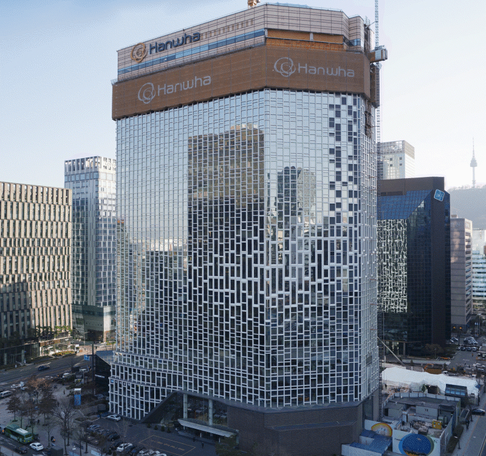
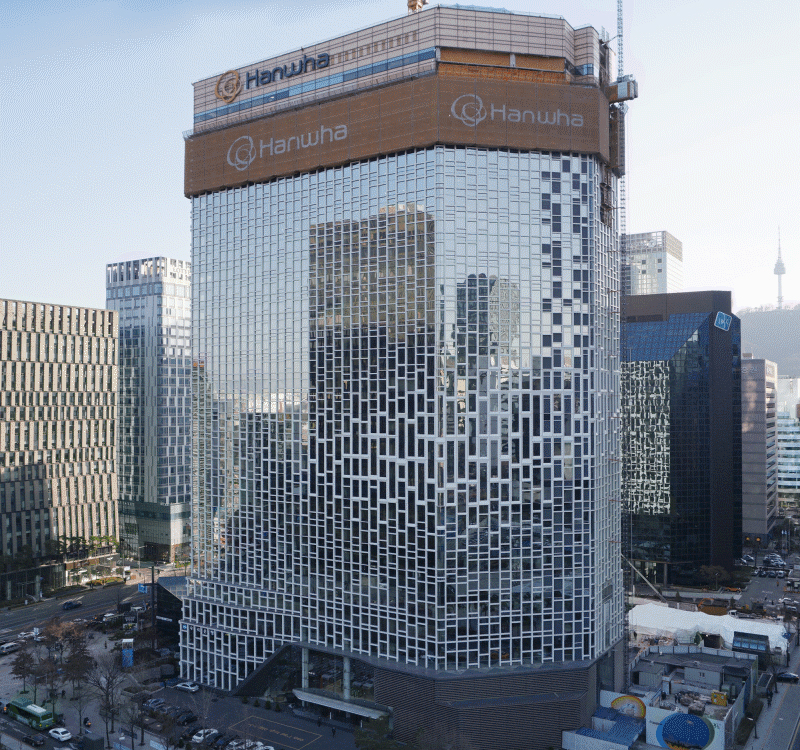
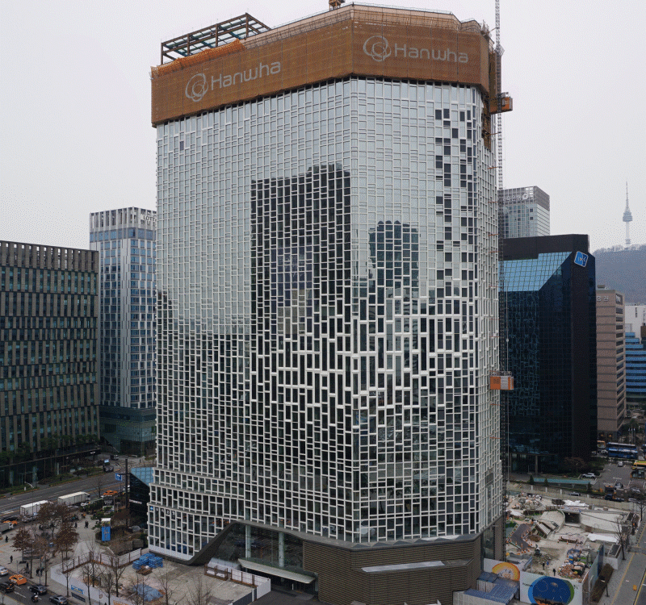
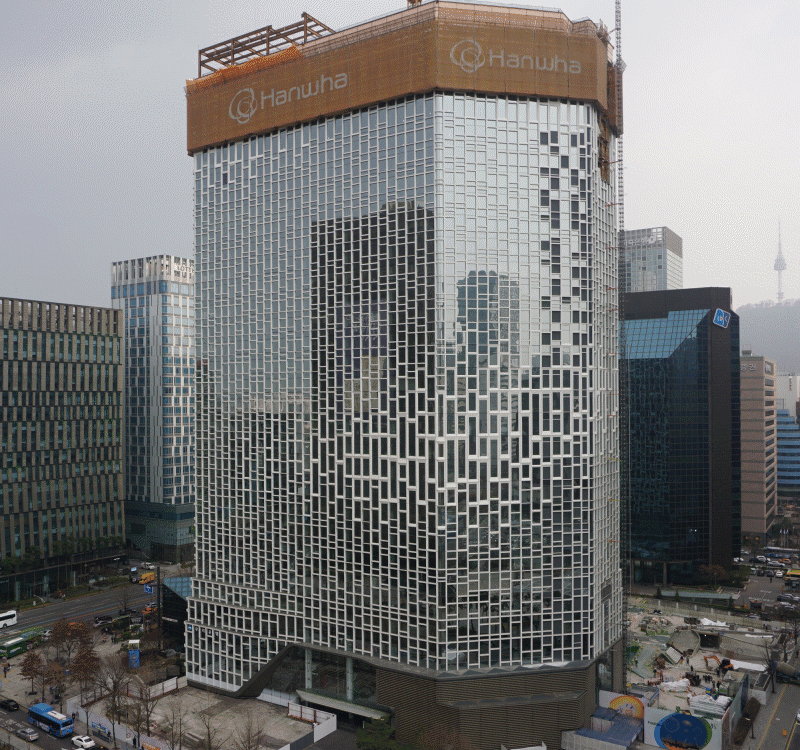
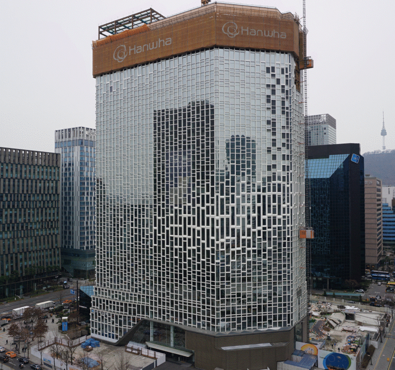
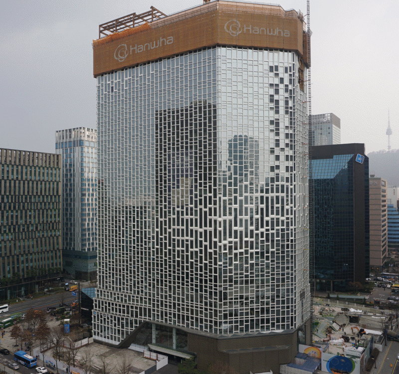

韩华总部大楼改造 融入可持续发展理念
一般而言，建筑物是涉及到一个人一生居住、工作和休息等方方面面的复合体。然而，据联合国统计，建筑物同时也是世界上最大的温室气体排放源。建筑部门的能源消耗占全球能源总消费的三分之一，2019年还纪录了历史最高水平。针对于此，联合国向建筑行业发出呼吁，将二氧化碳排放量在2030年之前实现减半，并在2050年之前实现建筑部门的碳中和目标。
当今，全世界都在致力于实现可持续发展的未来，在此情况之下，建筑部门也应当为强化可持续性助一臂之力。
世界高层建筑与都市人居学会(CTBUH)通过“全球最佳高层建筑奖与都市人居奖”评选等活动，激励营造更美好未来的活动。自2002年以来，CTBUH每年都评选出贡献于高层建筑与城市环境进步以及可持续发展的项目授奖。
今年，CTBUH对改造后的韩华总部大楼授予了全球最佳高层建筑奖与都市人居奖改造部门大奖。韩华总部大楼通过改造项目，在大楼外立面安装了光伏面板，内部装修也极具特色与魅力。作为绿色发展的领跑者，韩华在总部大楼历时45个月的改造升级工程中，积极采用尖端光伏技术，融入了很多体现社会和经济可持续性的元素。
改造工程凸显韩华的发展理念
韩华大楼早在上世纪80年代建成，外观比较陈旧，一直被认为需要大改造。尤其是大楼的能源效率低，极不符合韩华的企业理念与价值观。韩华是一家重视创新、能源效率和未来发展的企业。因此，作为总部大楼非常需要通过翻新，体现韩华对可持续发展的理念。


改造前后的韩华总部大楼
承接改造项目的 UNStudio 的资深建筑师 Astrid Piber 表示，“像韩华总部大楼改造项目这样，立足于循环的概念，对城市已有的元素重新加以利用的话，可以发挥很多优点。”韩华大楼在改造过程中，积极利用尖端技术、先进材料和系统，改善了员工的工作环境。而且分区域施工，每次只改造三、四层，使其他楼层在施工期间也能正常使用。


 

 




韩华总部大楼分区域进行改造，一次改造三、四层。
Piber 还表示，“我们在设计的时候总是考虑面向未来，兼顾地球与人类。这样的设计理念体现在各种项目之中。”基于这样的理念，在改造中也尽量体现韩华的可持续发展理念，既关注环保，还考虑造福于子孙后代。
立足绿色环保，推进可持续性
很多政府间合作组织将面向可持续发展的活动分为环境、经济和社会等三领域。韩华总部大楼体现的可持续性也可依此分类，通过总部大楼的改造在各个领域践行了可持续性。
一项活动要想在环境领域具有可持续性，一定要考虑人与自然和谐共存，不仅有利于当代也要造福于后代。世界高层建筑与都市人居学会一直非常关注如米兰的 “垂直森林” 那样，体现环境可持续性的建筑。垂直森林项目在两栋高层建筑上种植了可吸附微尘的植物两万余株，曾于2015年获得世界最佳高层建筑奖(Best Tall Building Worldwide)。
韩华总部大楼的改造项目也多角度体现了环境领域的可持续性。首先，在韩华总部大楼的外立面安装了韩华Q Cells的Q.PEAK光伏组件，面积达275平方米，通过生产清洁能源，大大降低了建筑对传统能源的依赖。
改造后的韩华总部大楼
UNStudio的设计团队设计了“反应型立面”，利用计算机建模方式，准确测算建筑立面每个区间辐射的日光量后，得到太阳光和太阳热的最优化利用率。同时，还利用建模方式测算的数据，决定了具体的角度、材料和隔热方式。结果，大楼一年排放的二氧化碳减少了35%，一年的能耗也降低了40%。
通过这些努力，韩华总部大楼在绿色大楼认证制度——绿色建筑认证(G-Seed)中，获得了“绿色2级”的优秀等级。建筑立面的改造不仅大大提高了建筑物的可持续性，也展现出独特而吸引耳目的外观。
经济方面的可持续性
韩华总部大楼反应型建筑立面
随着建造模式和技术的进步，一方面可以减少建筑的二氧化碳排放量，还可推动产业和经济方面的可持续发展。要实现经济领域的可持续发展，除了要创造经济利润以外，还需要加强保护人力和资源的力度。
韩华的 BIPV（光伏建筑一体化）技术就是有助于经济领域可持续性的一个典范。BIPV 可以使建筑材料生产电力，直接使建筑结构成为节省能源成本的元素。
除了韩华总部大楼以外，由韩华建造的其他建筑物也适用了BIPV 技术，如安山市常绿区政府大楼和昌原太阳能大厦等。昌原太阳能大厦立面的光伏面板生产的电力可以满足200户的电力需求。
韩华总部大楼外立面的光伏面板积极贡献于经济领域的可持续性。这些光伏面板每天可生产300千瓦时的清洁能源，节省了大笔电费。
可容纳3000人的内部空间也进行了改造升级，重新进行了装修。主要改变了入口正门、会议室和食堂等空间的设计，着力体现灵活性和舒适感。采用新的设计方案，优化了内部空间，提升了空间的利用效率，实现了经济方面的可持续性。
 社会方面的可持续性
社会方面的可持续性
作为积极担当社会责任的企业公民，韩华充分认识到建筑物对人们生活质量和共同体意识的影响。企业的活动要想有利于社会的可持续性，一定要把握并管控好活动对人们起到的影响。
改造后的韩华总部大楼内外空间都提高了社会方面的可持续性。尤其通过对内部空间的精心设计，打造出用于部门间协作的共享空间。大楼的内部和外部和谐相融，外部景观向内部空间自然延伸。内部层高高，使环境更加舒适，还使用天然材料，也摆设了很多植物。
改造后，在大楼外面还开辟出一个小广场，用于员工休息与交流。小广场中央有一个舞台，可供展开表演或文化活动，大楼西面设有展览空间，介绍媒体艺术。这些造景设计让韩华总部大楼自然而然成为城市景观的一部分，成为社区居民休息和欣赏艺术品的温馨空间。
-
小舞台

-
停车场入口

-
Light Shelter

- 媒体墙
在面向清溪川的建筑立面前面有小规模“柏林广场”，这里陈列着柏林市捐赠的柏林墙墙体。柏林广场本来未包括在改造范围内，但韩华考虑到柏林广场的象征性，决定加以复原。

改造韩华大楼时重新复原的清溪川柏林广场。
 理念落地
理念落地
在今年全球最佳高层建筑奖与都市人居奖评选过程中，韩华在改造总部大楼时兼顾环境和经济性的一切努力得到了高度评价。这次获奖也是对韩华为造福于韩华员工乃至全社会而全力以赴的高度肯定*。
韩华经过精心策划和具体落实，最终完成了总部大楼的改造工程。这是韩华为全球性问题提供实际解决方案，面向可持续发展默默耕耘的重要指标，
也是韩华落实可持续发展理念的具体行动，更是韩华为子孙后代创造更好结果而坚持不懈的精彩表现。
* 本文作为企业促进可持续发展的优秀案例，刊载于世界经济论坛官网“实时更新”栏目。
相关内容


关联公司
-
 (株)韩华
㈱韩华的前身是成立于1952年的㈱韩国火药，它作为韩国火药和基础产业的领军者，为集团的发展夯实了坚实的基础。历经六十七年的发展，现已成长为覆盖火药、军工、贸易、机械四大事业领域的国际性制造与贸易企业。
(株)韩华
㈱韩华的前身是成立于1952年的㈱韩国火药，它作为韩国火药和基础产业的领军者，为集团的发展夯实了坚实的基础。历经六十七年的发展，现已成长为覆盖火药、军工、贸易、机械四大事业领域的国际性制造与贸易企业。
-
 韩华Qcells
韩华Qcells是电池片产能排名世界第 一的太阳能全方位解决方案供应商。韩华Qcells拥有从中游领域的硅碇、电池 片、组件等，到下游领域的个人住宅、商业 设施、大型发电站的全方位解决方案，是 韩华集团太阳能事业的核心下属企业。
韩华Qcells
韩华Qcells是电池片产能排名世界第 一的太阳能全方位解决方案供应商。韩华Qcells拥有从中游领域的硅碇、电池 片、组件等，到下游领域的个人住宅、商业 设施、大型发电站的全方位解决方案，是 韩华集团太阳能事业的核心下属企业。
-
 韩华建设
韩华建设是一家承建土木、建筑、工厂 等工程的综合建筑公司，拥有丰富的施 工经验和技术实力。2002年以来，公司 保持年平均30%的增长率，入选世界 权威建设专业杂志ENR(Engineering News-Record)发布的全球最大承包 商(Global Contractor)，实力受到世 界土建市场的认可。
韩华建设
韩华建设是一家承建土木、建筑、工厂 等工程的综合建筑公司，拥有丰富的施 工经验和技术实力。2002年以来，公司 保持年平均30%的增长率，入选世界 权威建设专业杂志ENR(Engineering News-Record)发布的全球最大承包 商(Global Contractor)，实力受到世 界土建市场的认可。